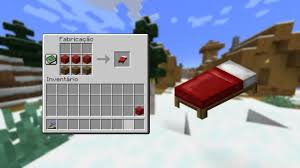

Como Sobreviver à Primeira Noite no Minecraft
Entrar pela primeira vez no mundo de Minecraft pode ser empolgante e intimidador ao mesmo tempo. A paisagem é vasta, cheia de blocos para quebrar e criaturas para enfrentar. O jogo pode parecer tranquilo durante o dia, mas quando o sol se põe, o perigo aumenta. Zumbis, esqueletos, aranhas e creepers aparecem — e se você não estiver preparado, sua jornada termina antes mesmo de começar. Neste guia, vamos ensinar como sobreviver à primeira noite, com estratégias práticas para iniciantes.
1. Coleta de Recursos Básicos
Logo que entrar no mundo, seu objetivo imediato deve ser coletar madeira. Localize uma árvore próxima, aproxime-se e segure o botão de ação para quebrar os blocos de tronco. Colete pelo menos 10 blocos e abra seu inventário para convertê-los em tábuas e depois em uma bancada de trabalho.
Com a bancada de trabalho (crafting table), crie uma picareta de madeira. Agora procure pedra — ela pode ser encontrada em encostas de montanhas ou escavando o solo. Com a pedra, fabrique ferramentas melhores: picareta, espada, machado e uma fornalha.

Essa etapa é crucial, pois sem ferramentas adequadas, será impossível minerar e explorar o mundo de forma eficiente.
2. Produção de Comida
Durante a exploração, aproveite para caçar animais próximos. Vacas, porcos, galinhas e ovelhas rendem carne crua, que você pode cozinhar na fornalha usando madeira ou carvão como combustível. Se encontrar sementes ao quebrar grama, guarde-as — elas serão úteis para plantar trigo mais tarde.
Evite correr desnecessariamente, pois isso consome sua barra de fome rapidamente. Uma boa dica é cozinhar carne de porco ou boi assim que possível, pois esses alimentos restauram bastante da sua vida e fome.

Agora que você tem comida suficiente, ficará mais fácil sobreviver ao longo da jornada e manter sua saúde alta.
3. Construção de Abrigo
Antes que a noite caia (isso acontece após cerca de 10 minutos de jogo), você deve estar com seu abrigo pronto. Ele pode ser simples: uma casa de 5x5 blocos feita com terra, madeira ou pedra. O importante é que tenha uma porta, um teto e iluminação interna.
Para iluminar, use tochas. Se não tiver carvão, você pode criar carvão vegetal queimando troncos na fornalha. Com o abrigo protegido, você pode continuar minerando dentro dele ou organizar seu inventário até o amanhecer.

O abrigo é sua principal defesa contra mobs durante a noite. Não se esqueça de criar um espaço para armazenar recursos e se organizar.
4. Fabricando a Primeira Cama
Se você conseguiu lã ao matar ovelhas, pode fabricar uma cama. Coloque três blocos de lã na linha superior da bancada de trabalho e três blocos de tábua logo abaixo. Dormir durante a noite é a forma mais eficiente de evitar combates perigosos no início do jogo.
Além disso, ao dormir, o jogo define seu ponto de renascimento para aquele local. Isso é essencial caso você morra mais à frente na aventura.
Ter uma cama é fundamental, pois ela não só permite pular a noite, como também define um ponto de renascimento seguro.
5. Dicas Extras para Sobreviventes
- Não cave diretamente para baixo! Isso pode te levar a cair em lava ou em buracos profundos.
- Construa um baú para armazenar itens importantes, como ferro e carvão.
- Mantenha sempre tochas no inventário para iluminar cavernas e sua casa.
- Fuja de creepers até estar bem equipado — sua explosão pode matar você instantaneamente.

Com essas estratégias simples, você estará pronto para sobreviver à primeira noite no Minecraft e dar os primeiros passos em direção a aventuras ainda maiores.